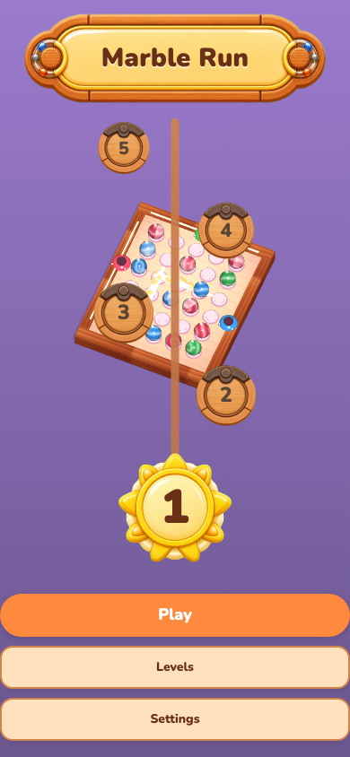
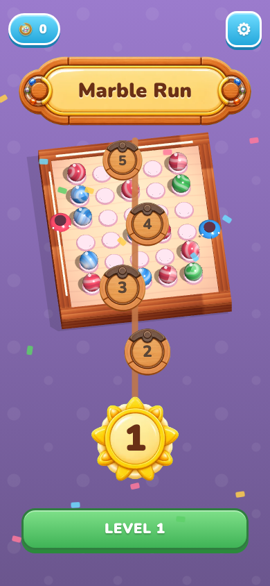
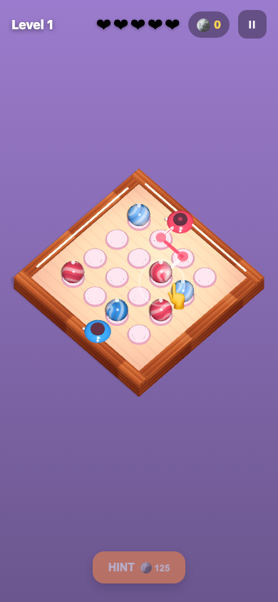
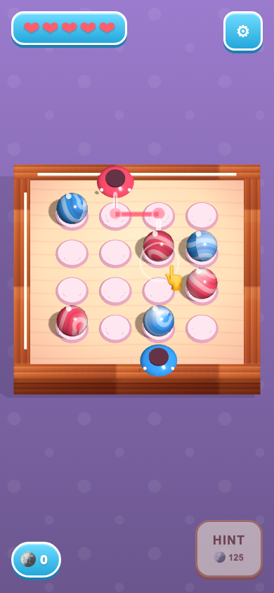
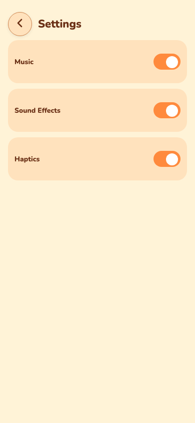
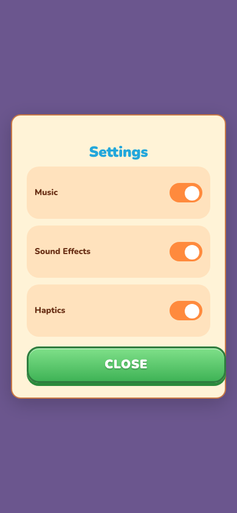

Menu
Menu



Card 6QcUojYp · P1 dead buttons + camera, P2 menu/HUD/chrome-to-reference.
Reference = Android com.basegamelab.marblerun (green outline).
All screens captured at 390×844.
.fab-toaster
(pointer-events:auto, forced by the #ui > *
blanket) was swallowing every menu click. Fixed at the overlay-layer CSS;
guarded by tests/e2e/menu-clicks.spec.ts (real
locator.click(), no harness / no force).
P1b camera: in-level yaw restored to 90° (v1 parity) — the
45° floating diamond is gone.






